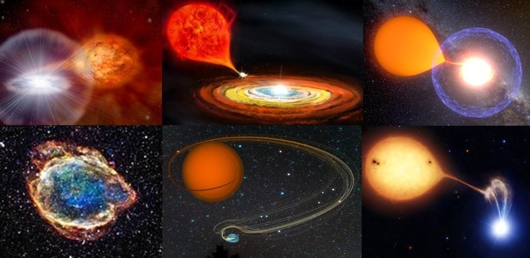

Cataclysmic variables are a rich and diverse family of the stars. Most of them are binaries (detached or semi-detached) where material from one star is transferred to another, which is usually a white dwarf. Common for the whole family is the fact that some kind of cataclysm occurs there. Type of this cataclysm is defined mostly by the donor star - the one which loses the material - and by the way in which matter is transferred.
Tutaj znajduje się treść dotycząca Nova-like variables.